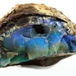

Timing Grimoire
October 17
Born on October 17th
The birthday of the lucky escape
Profile
Those born on October 17 often find themselves in challenging or even dangerous situations, but they have a remarkable ability to emerge from these experiences relatively unscathed. Whether the challenge is physical, emotional or professional, they seem to have a guardian angel watching over them, and their ability to land on their feet time and time again is quite extraordinary.
One of the reasons they find themselves in tricky situations so often is that they are natural risk-takers who are drawn to adventure, challenge and the thrill of the unknown. They have an insatiable curiosity and a restless energy that drives them to push boundaries and test limits. While this makes their life exciting and eventful, it can also lead them into trouble. Learning when to take a calculated risk and when to exercise caution is one of their most important life lessons.
Despite their daring exterior, they are deeply sensitive individuals who feel things very intensely. They have strong moral convictions and are not afraid to speak out against injustice. They are also fiercely protective of the people they love and will put themselves in harm's way to defend them. Their loyalty and courage inspire great devotion in others.
Before age thirty-four they are likely to be most focused on issues of personal power and transformation. During this period they may take more risks than is prudent and they need to ensure they do not become self-destructive. After thirty-five, a turning point arrives when they may become more adventurous in a more positive and expansive way, perhaps through travel, education or philosophy. Whatever age they are, they need to learn that while their ability to escape danger is remarkable, prevention is always better than cure. When they can channel their adventurous spirit into more constructive pursuits, there truly is no limit to what they can achieve.
Your Greatest Challenge
Knowing when to walk away.
The Way Forward
Understand that courage is not about seeking out danger but about knowing when to fight and when to retreat. True bravery includes the wisdom to avoid unnecessary risk.
You Are Drawn to People Born Between December 22 and January 19
Those dates fall under  Capricorn. You bring excitement and spontaneity, and they bring stability and grounding. This can be a balanced and fulfilling partnership.
Capricorn. You bring excitement and spontaneity, and they bring stability and grounding. This can be a balanced and fulfilling partnership.
Luck Maker: Learn from Close Calls
Lucky people do not just escape danger, they learn from it. Each close call teaches them something valuable about themselves and the world, making them wiser and luckier in the future.
At Your Best
Courageous, resilient, principled.
On the Dark Side
Reckless, self-destructive, provocative.
Love: Intense and Loyal
Those born on this day are passionate and intense lovers who bring excitement and energy to their relationships. They are fiercely loyal and expect the same in return. They can, however, be possessive and jealous, and they need to learn to give their partner the freedom and trust that every healthy relationship requires.
Health: Slow Down
These individuals live life at a fast pace and this can take a toll on their physical and mental health. They are prone to accidents and injuries, so they need to be extra careful, especially when driving, exercising or handling dangerous equipment. A balanced diet rich in fruits, vegetables, whole grains and lean protein is essential, and they should limit their intake of stimulants such as caffeine and alcohol. Regular exercise is important, but they should choose activities that help them slow down and focus, such as yoga, tai chi or swimming, rather than extreme sports. Wearing, meditating on and surrounding themselves with the color Blue will encourage them to be calmer and more reflective.
Career: Born Adventurers
These individuals thrive in careers that offer excitement, challenge and variety, such as emergency services, the military, law enforcement, journalism, travel and exploration. Their communication skills may draw them toward careers in media, public speaking, writing and law. Their desire to help others may lead them to the healing and caring professions, social work and charity.
Destiny: To Channel Their Adventurous Spirit into Positive Change
The life path of those born on this day is to learn to channel their restless energy and adventurous spirit into constructive pursuits. Once they can do this, their destiny is to inspire others with their courage, resilience and ability to overcome adversity.
Power Thought
I choose wisdom over recklessness, and I learn from every experience.
Signs & Symbols
- Sun sign:
 Libra
Libra - Ruling planet: Venus, the lover
- Symbol: The Scales
- Birth date ruler:
 Saturn, the teacher
Saturn, the teacher - Tarot card: The Star (hope)
- Favorable numbers: 8, 9
- Lucky days: Friday and Saturday, especially when these days fall on the 8th or 9th of the month
- Lucky colors: Pink, Lavender, burgundy
- Birthstone:

Opal